製造能力
我們相信，製作一張好床，需要時間的累積與對細節的在意。從設計、組裝、車縫到包裝出貨，凱撒保有一條龍的製程，默默為品牌打底，把每一件小事做好。
機台設備
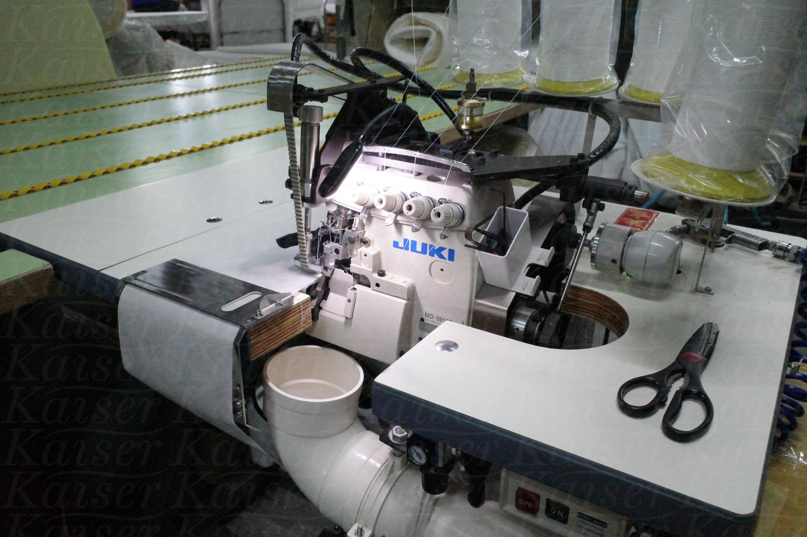
三合一拷克針車
自動化高速組裝系統，有效提升效率與精準度，減少人工誤差。
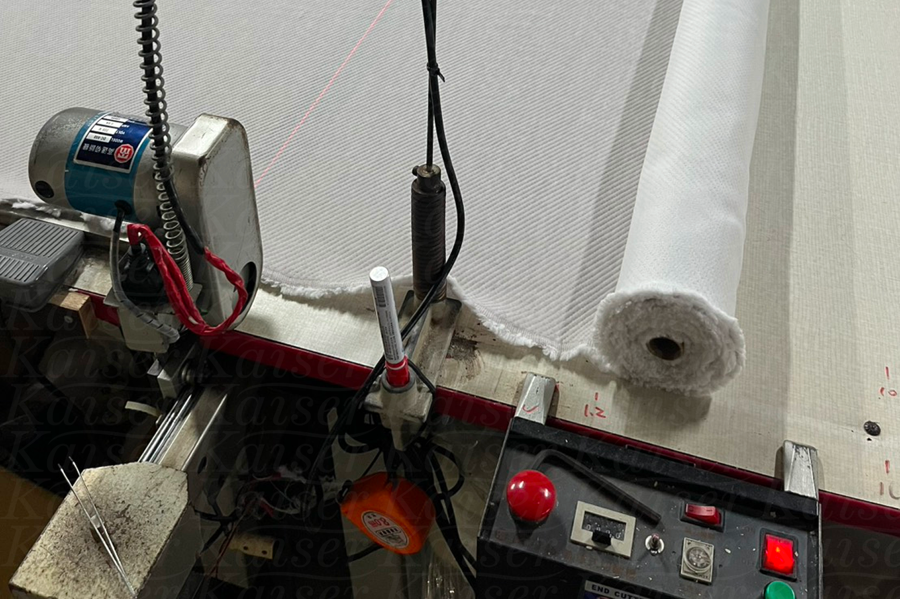
布面裁切機
高精度裁切，確保每一層泡棉厚度與尺寸一致。
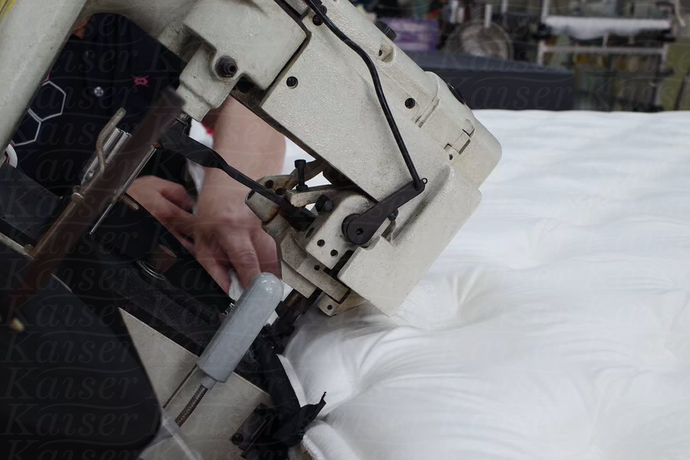
包邊車縫機
支援出口與電商需求，節省運輸空間，效率高、密封佳。
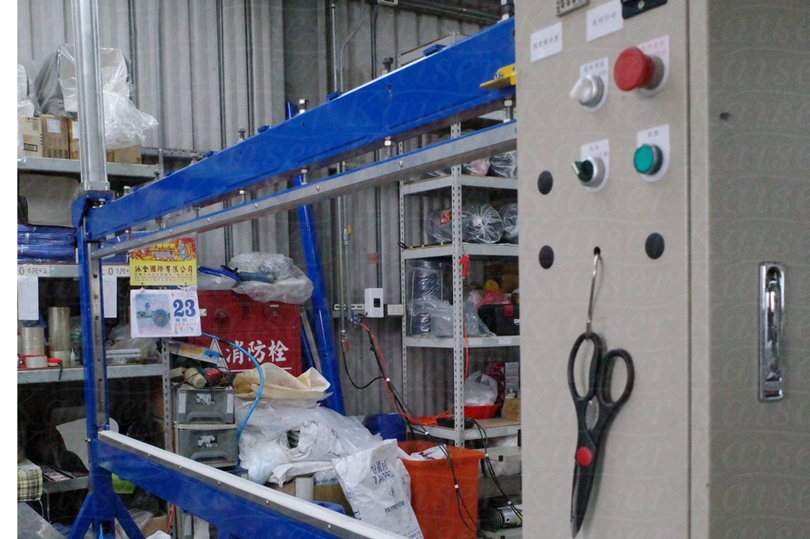
包裝封口機
高品質包邊縫線，提升床墊外觀與耐用性。
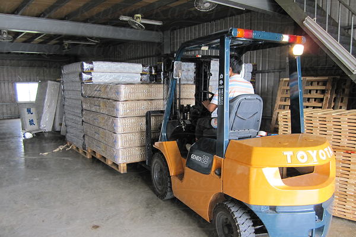
倉儲堆高機
高品質包邊縫線，提升床墊外觀與耐用性。
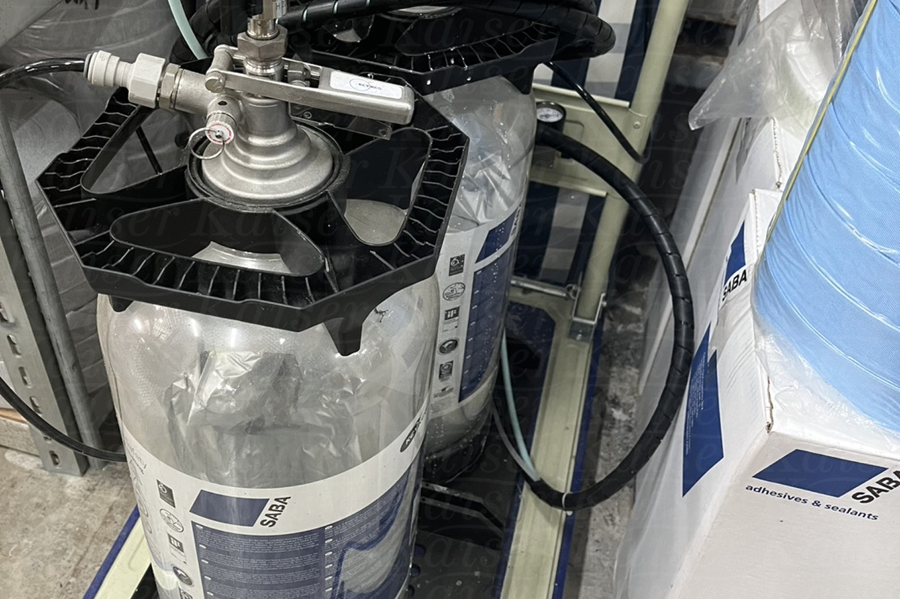
SABA水性環保膠
高品質包邊縫線，提升床墊外觀與耐用性。
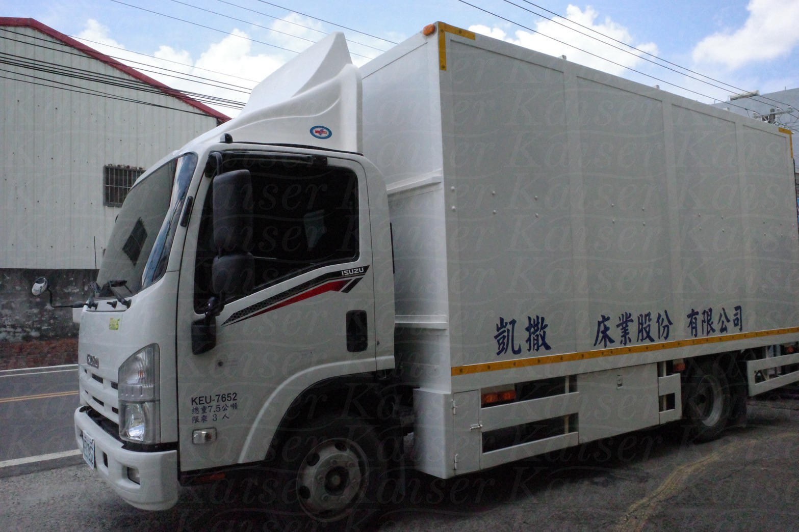
物流貨車
高品質包邊縫線，提升床墊外觀與耐用性。
倉儲備料
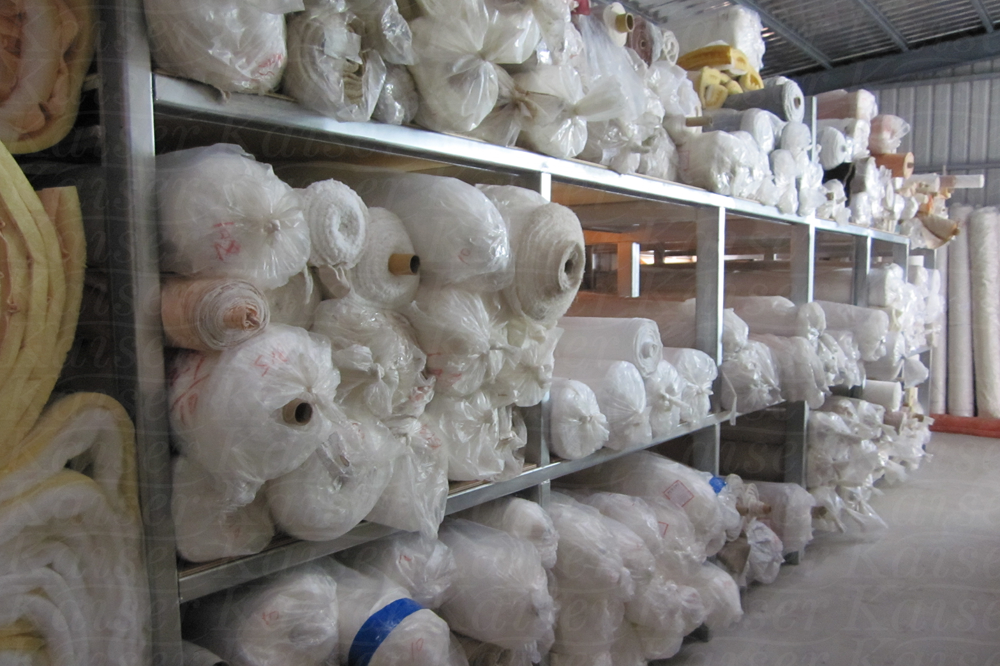
多款素色布料
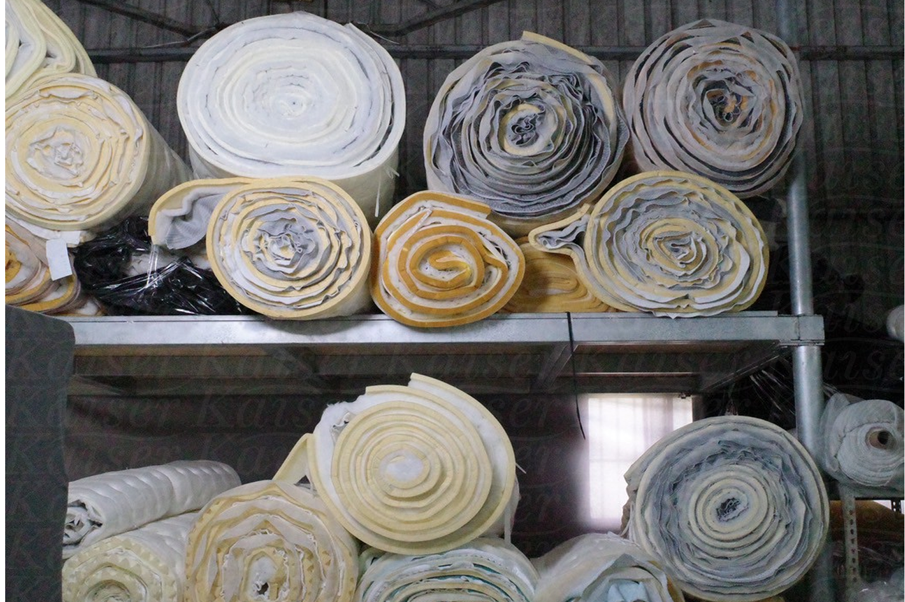
多款布花樣式
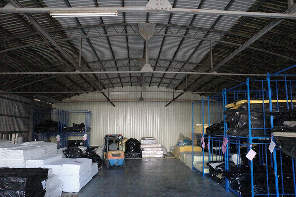
各式規格片材
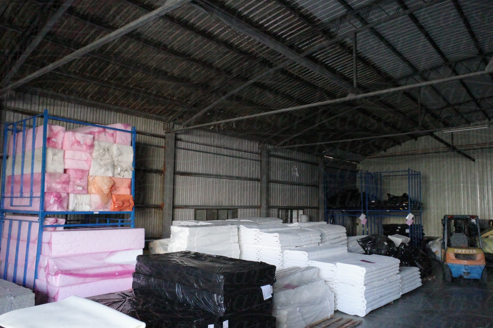
各式規格片材
製造流程
- 原料準備： 我們選用的材料，大多來自台灣口碑穩定的大廠，品質有保障，也更能掌握每批料的狀況與一致性。
- 產品設計： 長年與品牌合作的經驗，讓我們熟悉各種材質特性，也懂如何搭配出客戶想要的風格與質感。
- 裁切組裝： 所有泡棉與布料皆使用自動化機台裁切，確保尺寸穩定，細節俐落，不假手剪刀、不馬虎。
- 車縫包邊： 每一條縫線、每一道包邊，都照規格完整處理。細緻收邊讓成品更挺、更美，也延長了床墊的整體壽命。
- 品檢包裝： 由人工進行外觀檢查，確保沒有明顯瑕疵後，使用包裝機進行壓縮與封裝，整齊出貨，方便倉儲與配送。
品質控管
- 全製程品質檢查，從原料到成品皆有把關
- 彈性、耐壓等測試，確保每張床都有該有的品質
- 如有需要，我們也能提供 SGS等第三方檢驗報告，給您多一份安心